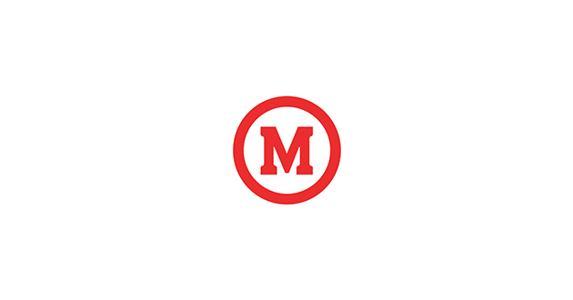

20 de janeiro de 2022
Ingresso na Universidade Presbiteriana Mackenzie

Na Universidade Presbiteriana Mackenzie já adquiri experiencias com linguagens de programação: Html5,
CSS3, JavaScrip, Python, Java, banco de dados e Metodologias Ágeis (Scrum). Também participo de dois
projetos: Residência de Software e Mack Mentoring. Sou um aluno aplicado de média curricular ótima.